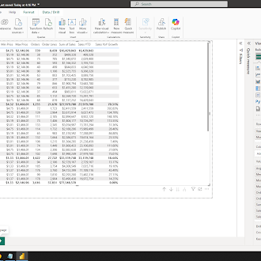
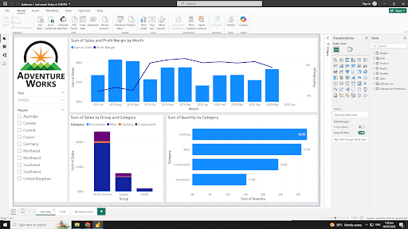

Student Portfolio
Jaycee M. Casaul
BSCS Student
Current Goal
Build practical skills in systems, data work, and digital problem-solving.
About Me
Student Profile
I am Jaycee M. Casaul, a BSCS student from City College of Angeles who enjoys learning through hands-on experience and continuous exploration. I am interested in discovering practical uses of technology, improving my technical skills, and working on projects that strengthen my understanding of systems and problem-solving. My goal is to grow into a capable IT professional who can contribute meaningful ideas and effective digital solutions.
Learning Style
I build understanding by practicing tasks, reviewing outputs, and improving details step by step.
Tech Interest
I am interested in digital tools, system thinking, and projects that improve organization and efficiency.
Education
Academic Journey
College
Currently studying at City College of Angeles
High School
Graduated from Francisco G. Nepomuceno Memorial High School
Projects
Academic Task Board

Midterm Task 01
Midterm Task 1: Data Cleaning and Preparation using Excel
This task focuses on organizing raw data, fixing errors, and preparing information for accurate analysis in Excel.
View Image
Midterm Task 02
Midterm Task 2: Data Analysis using Pivot Table
This project summarizes data through pivot tables to make trends, totals, and comparisons easier to understand.
View Image
Midterm Task 03
Midterm Task 3: Data Preparation, Cleaning, and Modeling with Power Query
This task uses Power Query to clean, transform, and model data into a more organized and usable format.
View Image
Finals Task 01
Finals Essay Task 01: Data Analytics and SQL
This task uses an article and a video roadmap to assess foundational understanding of data analysis requirements, domain integration, and the technical application of SQL in real-world business contexts.
View Image
Finals Task 02
Finals Task 02: Navigating Power BI
This task focuses on analyzing a foundational data roadmap and SQL integration strategies to understand what drives success as a data analyst. It prepares candidates to effectively merge technical skills with business domain knowledge for real-world impact.
View Image
Finals Task 03
Finals Task 03: Time Intelligence Function in Power BI
This task focuses on utilizing DAX time intelligence functions in Power BI to create dynamic Year-to-Date (YTD) and Year-over-Year (YoY) growth measures. It prepares candidates to effectively manipulate filter contexts and calculate critical temporal trends for corporate financial reporting.
View Image
Finals Task 04
Finals Task 4: Designing Interactive Reports
This task focuses on evaluating multi-page report layout strategies and the technical configuration of interactive visualizations within Power BI. It prepares students to transition from building individual charts to developing cohesive, synced dashboards that synchronize filters and streamline data exploration for enterprise users.
View ImageContact
Reach Out
If you would like to connect regarding school work, projects, or collaboration, you can contact me through email.
Email
casauljaycee08@gmail.com